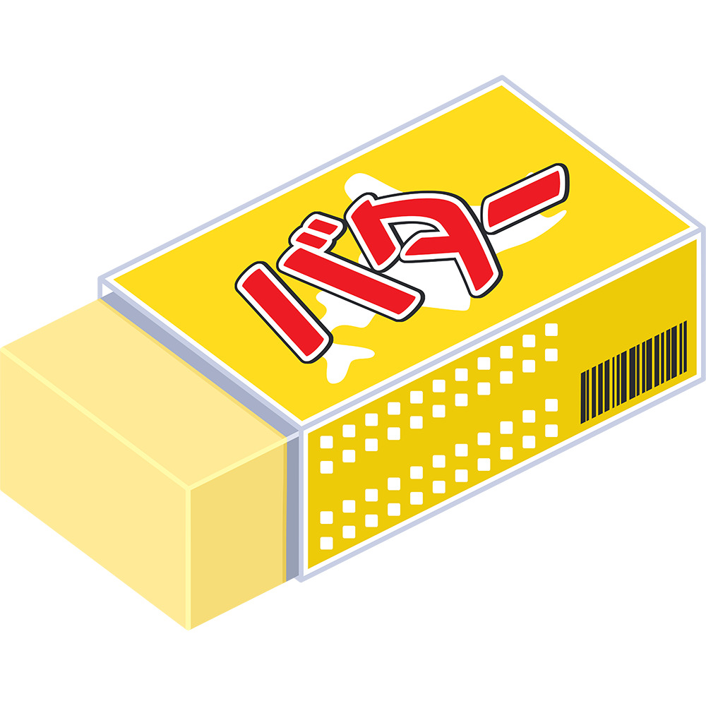

Keigo Shibata
Master Student @ Tohoku University, Failab

About
First year Master student at the Graduate School of Information Sciences, Tohoku University, and a member of the Tohoku NLP Group.
Research
Large Language Model Pre-training
Master Student @ Tohoku University, Failab

First year Master student at the Graduate School of Information Sciences, Tohoku University, and a member of the Tohoku NLP Group.
Large Language Model Pre-training